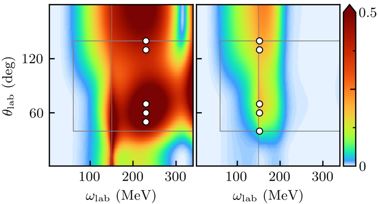

Experimental design
Beam time and compute cycles are expensive!
- Bayesian experimental design provides a framework in which experiments can be designed using the best experimental and theoretical information available
- The utility function is designed to encode the goals of the experiment and the constraints inherent in carrying it out.
- Once the utility function and the possible designs have been specified, the optimal design is simply the scenario that maximizes the expected utility function over the domain of possible designs.
